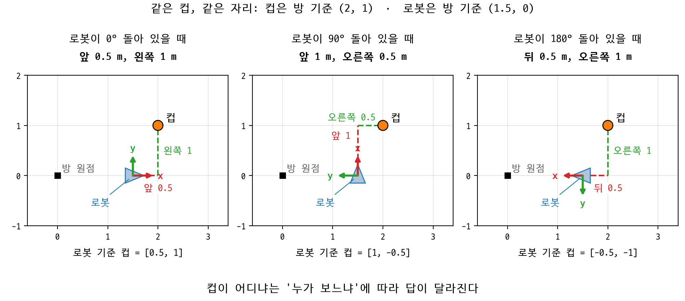
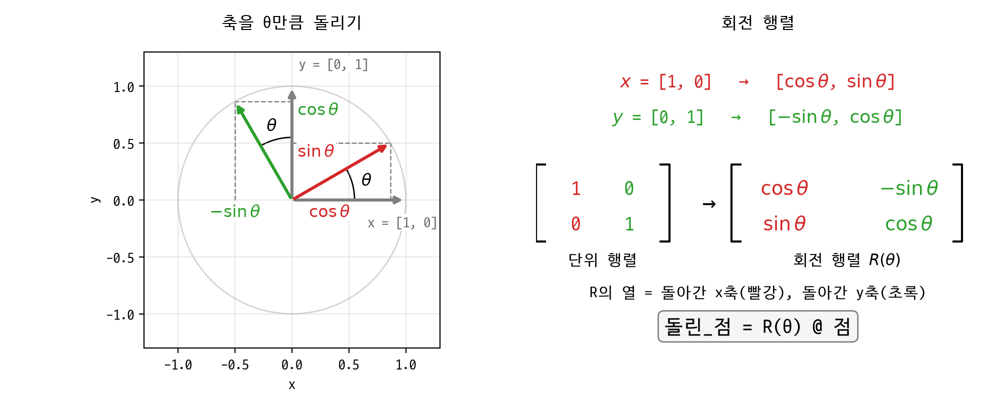
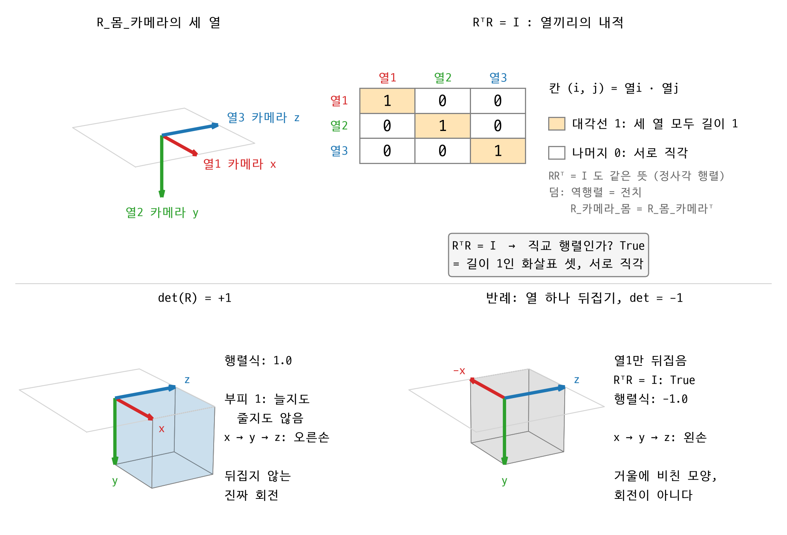

컵은 가만히 두고 로봇만 돌아봅니다. 같은 컵의 앞·옆 숫자가 왜 달라지는지 봅니다.
컵은 그대로인데 숫자는 달라집니다
컵과 로봇의 자리는 그대로 둡니다. 로봇이 몸만 왼쪽으로 돌리면 같은 컵이 “앞”에서 “오른쪽”으로 보일 수 있습니다. 컵이 움직인 것과 기준이 바뀐 것을 나눕니다.
컵과 로봇의 위치값
방 바닥에 컵 하나와 로봇 하나를 두겠습니다. 컵 위치는 방 기준 (2,1)m, 로봇 원점은 (1.5,0)m입니다. 로봇이 보는 컵 좌표를 구할 때는 위치를 빼는 일과 축 방향을 맞추는 일이 모두 필요합니다.
02-frames-rotations\b01_two_frames.py · 읽을 줄 1–10
cd C:\code\src\robo\vol3\02-frames-rotations
..\..\.venv\Scripts\python.exe b01_two_frames.py방 기준 컵 위치 : [2. 1.]
로봇 기준 컵 위치: [0.5 1. ]같은 컵이 방 기준 (2, 1), 로봇 기준 (0.5, 1)로 적힙니다. 로봇이 방과 같은 방향을 볼 때(회전 없음)는 원점만 빼면 됩니다.
이 쪽의 그림을 만든 파일(같은 폴더, 실행하면 그림 PNG를 저장): 02-frames-rotations\s36_cup_three_yaws.py
원점만 빼면 아직 방의 축으로 적힌 값입니다


원점을 빼고 축을 바꾸는 계산
로봇이 방의+x를 앞이라고 보면 컵은 앞0.5m, 왼쪽1m입니다. 로봇이 왼쪽90°돌아 방의+y를 보면 같은 컵이 앞1m, 오른쪽0.5m, 즉 로봇 좌표 (1,−0.5)가 됩니다. 컵을 옮긴 것이 아니라 같은 컵을 다른 기준축으로 다시 쓴 것입니다.
포즈는 원점의 위치와 좌표축의 자세를 함께 뜻합니다. 위치 세 숫자만으로 “어디를 보고 서 있는지”까지 알 수는 없습니다.
그림을 보기 전에 축 약속을 고정합니다
로봇 몸의 앞·왼쪽·위에 x·y·z 이름표를 붙입니다. 카메라의 이름표는 오른쪽·아래·렌즈 앞입니다. 같은 앞 방향도 어느 이름표로 읽는지에 따라 성분이 다릅니다.
몸·광학축 약속과 rad 변환
| 기준 | +x | +y | +z |
|---|---|---|---|
| 몸 body | 앞 | 왼쪽 | 위 |
| 카메라 광학 | 화면 오른쪽 | 화면 아래 | 렌즈 앞 |
이 몸 좌표 약속은 ROS 표준 문서 REP 103이 정리한 것으로, 로봇 분야에서 널리 씁니다. 같은 “앞”이 몸 좌표에서는 x축이고 카메라 좌표에서는 z축입니다. 카메라 좌표가 이런 모양인 까닭은 사진의 픽셀 번호가 왼쪽 위에서 시작해 오른쪽(x)과 아래(y)로 늘어나기 때문입니다. 이름도 한 가지 습관을 들입니다. 변수에 컵_방, 컵_로봇처럼 무엇을 어느 기준으로 쟀는지를 적어 두면, 좌표계가 셋, 넷으로 늘어도 헷갈리지 않습니다.
오른손 좌표계에서 x×y=z입니다. 좌표 그림을 화면에서 돌려 보는 것은 보는 시점만 바꾸며, 몸이나 좌표 변환의 숫자를 바꾸는 조작과 구분합니다. 길이는 m, 삼각함수에 넣는 각은 rad로 통일하고 사람이 입력한 도는 명시적으로 바꿉니다.
각도_rad = np.deg2rad(60)
c, s = np.cos(각도_rad), np.sin(각도_rad)np.cos(90)은90rad의 코사인으로 약 −0.4480736입니다. 90°를 뜻하려면 np.cos(np.deg2rad(90))을 씁니다. 오류 메시지 없이 그럴듯한 숫자가 나오는 단위 실수입니다.
01-what-is-a-robot\b26_vectors_axes.py · 읽을 줄 6–30 · 그림 파일을 저장하므로 임시 폴더에서 돌립니다
cd $env:TEMP
C:\code\src\robo\.venv\Scripts\python.exe C:\code\src\robo\vol3\01-what-is-a-robot\b26_vectors_axes.pyv1 - v2 = [2.5 0.5] / 길이 2.55 m
x × y = z y × x = -z
y × z = x z × y = -x
z × x = y x × z = -y
주의: x * y = [0 0 0] → 성분끼리 곱한 값이라 외적이 아니다(np.cross를 쓴다)
저장: vectors_axes.png위치 벡터의 뺄셈(v1 − v2)과 오른손 좌표의 외적 규칙(x×y=z)을 확인합니다. 마지막 줄은 *와 np.cross를 혼동하는 실수입니다.
02-frames-rotations\b02_right_hand.py · 읽을 줄 1–11
cd C:\code\src\robo\vol3\02-frames-rotations
..\..\.venv\Scripts\python.exe b02_right_hand.pyx × y = [0 0 1]
y × z = [1 0 0]
z × x = [0 1 0]
y × x = [ 0 0 -1]x×y=z, y×z=x, z×x=y와 순서를 뒤집으면 부호가 바뀌는 것을 np.cross로 확인합니다.
02-frames-rotations\b06_deg_rad.py · 읽을 줄 1–6
cd C:\code\src\robo\vol3\02-frames-rotations
..\..\.venv\Scripts\python.exe b06_deg_rad.pynp.cos(90) = -0.4481
np.cos(np.deg2rad(90)) = 0.0
180도 = 3.141592653589793 라디안
1라디안 = 57.3 도np.cos(90)은 90도가 아니라 90rad의 코사인입니다. 오류 없이 −0.4481이 나옵니다.
이 쪽의 그림을 만든 파일(같은 폴더, 실행하면 그림 PNG를 저장): 02-frames-rotations\s37_body_camera_frames.py
사용자 그림의 두 화살표를 열로 세웁니다


회전행렬 두 열과 길이 3 막대 계산
먼저 원점에서 오른쪽으로 길이1인 eₓ=(1,0)을 θ만큼 반시계로 돌립니다. 도착점은 (cosθ,sinθ)입니다. 다음 위쪽 단위축 eᵧ=(0,1)도 똑같이 돌립니다. 처음90°에서90°+θ로 가므로 (−sinθ,cosθ)입니다. θ=30°에서 두 번째 축은120°를 바라보니 왼쪽 성분이 음수입니다.
R(θ)[a,b]ᵀ = a×첫째 열 + b×둘째 열
이제 사용자가 그린 길이3 막대 (3,0)을60°돌립니다. 첫째 열을3배하므로 (3cos60°,3sin60°)=(1.5,3√3/2)≈(1.5,2.598076)입니다. 길이 √(1.5²+2.598076²)=3으로 그대로입니다.
R = np.array([[c, -s], [s, c]])
돌린_벡터 = R @ np.array([3.0, 0.0])여기서는 고정된 축에서 화살표를 실제로 돌리는 능동 회전을 설명했습니다. 다음 수업에서 같은 모양의 행렬을 “한 화살표를 다른 기준축으로 표현”하는 수동 좌표변환으로도 읽습니다. 어느 해석인지 기준을 먼저 고정해야 방향이 뒤집히지 않습니다.
따라 하기: θ=30°에서 첫째 열은(0.866025,0.5), 둘째 열은(−0.5,0.866025)임을 그림과 대조합니다. 두 열을 각각3배하는 것과 벡터(3,0)에 곱하는 것은 다릅니다. 후자는 첫 열만3배합니다.
02-frames-rotations\b03_rot2d.py · 읽을 줄 1–15
cd C:\code\src\robo\vol3\02-frames-rotations
..\..\.venv\Scripts\python.exe b03_rot2d.py 30도 돌리면 → [0.866 0.5 ]
90도 돌리면 → [0. 1.]
180도 돌리면 → [-1. 0.]2차원 회전행렬로 (1, 0)을 30도·90도·180도 돌립니다.
02-frames-rotations\b05_rot2d_plot.py · 읽을 줄 1–32 · 그림 파일을 저장하므로 임시 폴더에서 돌립니다
cd $env:TEMP
C:\code\src\robo\.venv\Scripts\python.exe C:\code\src\robo\vol3\02-frames-rotations\b05_rot2d_plot.py저장: rot2d.png같은 회전을 그림(rot2d.png)으로 저장합니다. 화면에는 저장했다는 한 줄만 나옵니다.
02-frames-rotations\b25_rot2d_axes.py · 읽을 줄 1–81 · 그림 파일을 저장하므로 임시 폴더에서 돌립니다
cd $env:TEMP
C:\code\src\robo\.venv\Scripts\python.exe C:\code\src\robo\vol3\02-frames-rotations\b25_rot2d_axes.pyR(30°) =
[[ 0.866 -0.5 ]
[ 0.5 0.866]]
R @ x = [0.866 0.5 ] R @ y = [-0.5 0.866]
R의 열 == 돌린 축: True
저장: rot2d_axes.pngR(30°)의 두 열이 회전한 두 축과 같다는 것을 확인하고 그림(rot2d_axes.png)을 저장합니다.
전치는 되돌리기, 행렬식은 숫자 하나입니다


전치·내적·행렬식을 따로 검사
따라서 R⁻¹=Rᵀ, 평면에서는 R(θ)ᵀ=R(−θ)
열끼리 내적하면 각 열 길이의 제곱은1, 서로 내적은0입니다. 그래서 정방행렬 R에 대해 전치가 역이 됩니다. 행렬식+1은 이 직교변환이 반사를 포함하지 않는다는 조건입니다. 두 조건을 함께 확인합니다.
행렬식만1이면 충분하지 않습니다. 예를 들어 diag(2,0.5)는 행렬식이1인데 x방향 길이를 두 배로 늘립니다. 반대로 diag(1,−1)은 직교하지만 행렬식−1이라 거울 반사입니다. det(R)는1이라는 스칼라, R.T는 행과 열을 바꾼 행렬입니다.
선택 확인 · R60으로 돌린 길이3벡터에R60ᵀ을 곱하면?
(3,0)으로 돌아옵니다. 회전이 길이를 보존하고 전치가 역이기 때문입니다. det를 곱해서 되돌리는 것이 아닙니다.
다음 카메라 축 수업의 조작 화면에서 두 열과 카메라의 세 열을 이어서 볼 수 있습니다.
02-frames-rotations\b04_rot2d_props.py · 읽을 줄 1–19
cd C:\code\src\robo\vol3\02-frames-rotations
..\..\.venv\Scripts\python.exe b04_rot2d_props.pyR의 전치 @ R =
[[1. 0.]
[0. 1.]]
행렬식: 1.0
역행렬과 전치가 같은가? True
돌리기 전 길이: 5.0 / 돌린 뒤 길이: 5.0
전치로 되돌리면: [3. 4.]
30도를 두 번 == 60도 한 번? TrueRᵀR=I, det=+1, 길이 보존, 전치로 되돌리기, 30도 두 번=60도 한 번을 차례로 확인합니다.
이 쪽의 그림을 만든 파일(같은 폴더, 실행하면 그림 PNG를 저장): 02-frames-rotations\s40_rotation_checks.py
스스로 확인하기
답은 글에서 찾지 않고 예제를 직접 돌리거나 한 줄 바꿔 돌려서 얻습니다. 숫자는 이 컴퓨터에서 나온 값입니다.
수업 근거와 원문 보기
교안·교과서·기존 1일차 필기와 그림을 하나의 설명 흐름으로 재구성했습니다. 아래 쪽수는 PDF 파일의 페이지 순서입니다. 예전 그림 안의 슬라이드 쪽수는 수정 전 교안의 번호일 수 있습니다.
교안: 42쪽, 43쪽, 44쪽, 45쪽, 46쪽
교과서: 55쪽, 56쪽, 57쪽, 58쪽, 59쪽, 60쪽, 61쪽, 62쪽
기존 실습 필기와 파일명·축 약속 교정. 그림과 코드는 기존 학습 폴더의 보관 사본에서 필요한 부분만 재사용했습니다.
재사용 자료: s36_cup_three_yaws.png, rot2d_axes.png, s40_rotation_checks.png, b25_rot2d_axes.py
이 글의 출력 숫자는 이 컴퓨터(MuJoCo 3.17.0, 파이썬 3.12.3)에서 예제를 직접 돌린 값입니다. 그림은 해당 s## 파일이 그린 것입니다. 본문의 손계산 예는 조건을 함께 적었습니다.